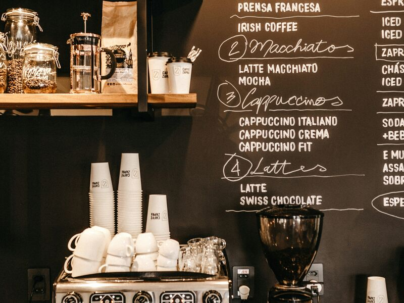
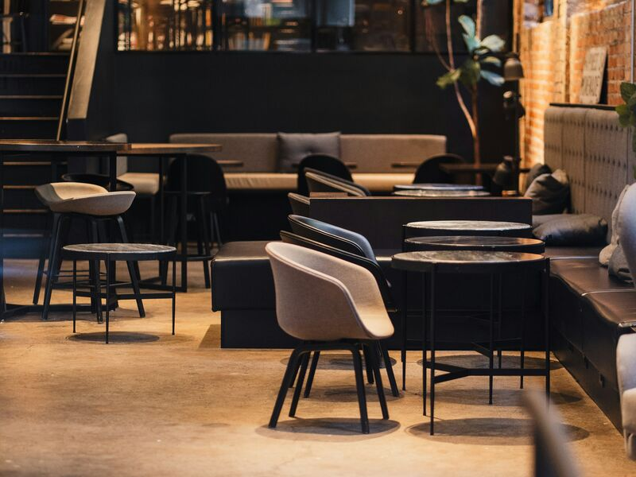

Demo fiktif untuk latihan dan portofolio AHYAR
Kedai Senja Coffee
Kopi hangat untuk sore yang tenang.
Pesan via WhatsApp (demo)Tentang Kedai
Kedai Senja Coffee adalah kedai kopi fiktif yang dibuat sebagai contoh website untuk usaha lokal. Cerita dan data di halaman ini bukan usaha sungguhan.
Kami membayangkan sebuah tempat sederhana di sudut kota: biji kopi pilihan, minuman diseduh saat dipesan, dan kursi yang nyaman untuk berlama-lama.
Galeri
-

-

Lokasi dan Jam Buka
Alamat (fiktif): Jl. Contoh No. 1, Kota Contoh
Jam buka (fiktif): Setiap hari, 10.00-22.00
Hubungi via WhatsApp (demo)